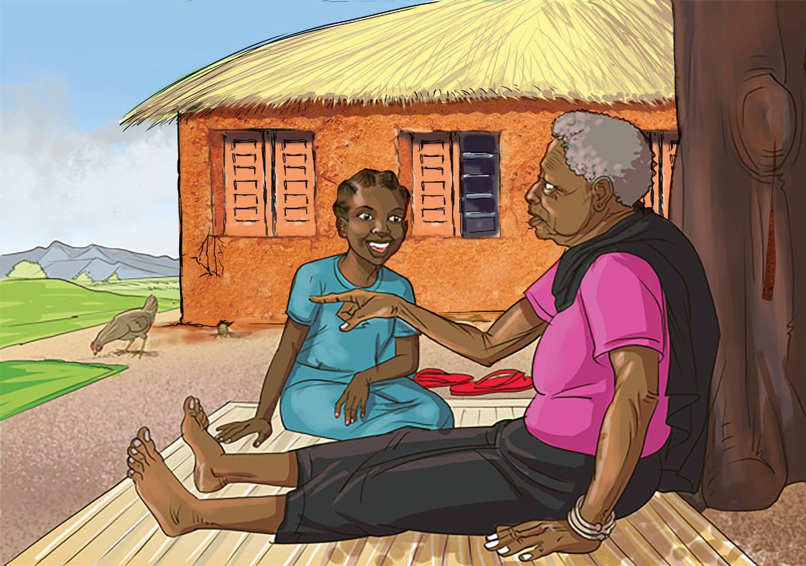

(d) Read the following story and answer the questions orally or in sign language.
A visit to my grandmother’s house

My name is Mego. Two years ago, I visited my grandmother who lives in a small house in Mbeje village. The house had a heavy wooden door. When I entered my grandmother’s house, I was surprised to see so many household tools and utensils in such a small house. On one side, I saw hoes, brooms, a wheelbarrow,